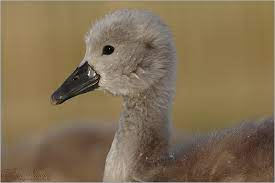

Általában tavakat választ költőhelyül, nádasokban fészkel, hatalmas fészket épít.
6-7 tojást rak, csak a tojó kotlik. 34-38 napig kotlik, ezután a röpképtelen fiókák követik a szüleiket.
Eközben a hím:
Vándormadár, Európa enyébb területein telel.
Főleg Vízinövényeket, kis mennyiségben állati eredetű táplálékot fogyaszt.

Főleg lápos, fátlan tundrák kisebb tavain telepszik meg. Fészkét kis szigetre építi.
3-5 tojást 35 napig csak a tojó költ, a hím is ráül a tojásokra, ám kotlani nem tud.
Főleg vízinövényeket fogyaszt, de emellett a szárazföldön is előszeretettel legel.
Hatalmas területre van szüksége, ahol nem tűr meg más hattyúcsaládot.
| Faj | Testhossz | Szárnyfesztávolság | Testtömeg | |
| Bütykös hattyú | 145-160 cm | 208-238 cm | Hím:9-14 kg | Tojó: 7-11 kg |
| Kis hattyú | 115-127 cm | 170-195 cm | 3,4-7,8kg | |